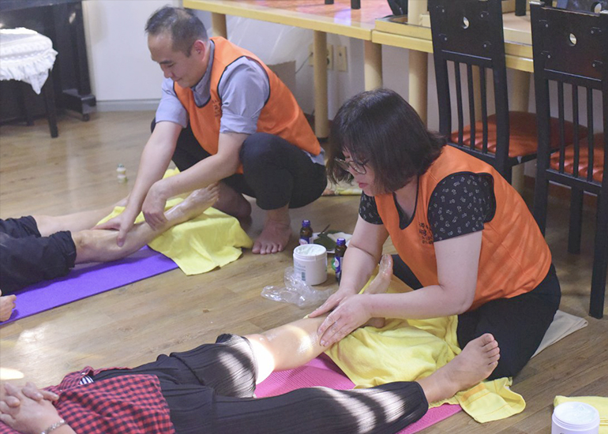
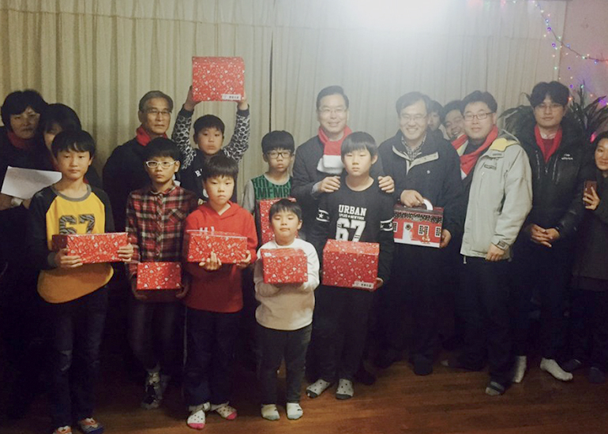

국내 선교
(National Mission)
네 이웃을 네 자신 같이 사랑하라
마태복음 22장 39절

- 찾아가는 선교 (Outreaching Ministry)
- 우리 교회 농어촌선교팀은 정기적으로 농어촌 오지교회와 그 지역주민을 찾아가는 선교(Outreaching Ministry)를 하고 있습니다.
- 의료, 미용, 발마사지, 그리고 간단한 가전 수리와 전등 교체 등의 사역을 하고 있습니다.
- 이로 인하여 지역주민들의 좋은 호응을 얻고 있으며, 이것을 복음 확산의 좋은 동기부여과 계기를 삼고 계속 추진하고 있습니다.

- 슈박스 미션 (Shoe Box Mission)
- 마태복음 22장 39절 말씀의 교훈을 따라 그리스도의 사랑을 전하기 위해 국내 미자립교회와 기관들을 상대로 〈슈박스 미션 Shoe Box Mission〉 사역을 정기적으로 진행하고 있습니다.
- 주변에 있는 10개의 시설에 거주하는 어린 고아들에게 사랑을 담은 선물을 전달하는 이웃사랑 프로젝트를 시행하고 있습니다.